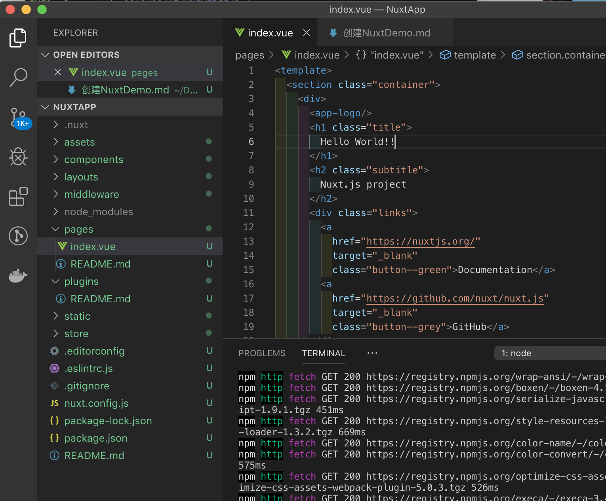
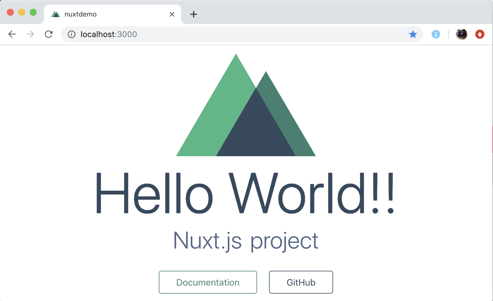

创建一个Hello World Nuxt Demo
什么是Nuxt
Nuxt就是一个通用的Vue.js的框架。再直白点说，就是Vue.js原来是开发SPA（单页应用）的，但是随着技术的普及，很多人想用Vue开发多页应用，并在服务端完成渲染。这时候就出现了Nuxt.js这个框架，她简化了SSR的开发难度。还可以直接用命令把我们制作的vue项目生成为静态html。
什么是SSR和SPA
Nuxt.js最常用于的是SSR – Server Side Rendering(服务端渲染)，也就是在服务器端上把我们的Vue文件渲染成html，然后再返回给浏览器。
Vue写出来的大都是SPA – Single Page Application(单页应用)。
把所有东西加载完之后再在浏览器打开。但是对SEO搜索引擎不友好。
SSR优点：
- 更好的 SEO，由于搜索引擎爬虫抓取工具可以直接查看完全渲染的页面。
如果你的应用程序初始展示Loading菊花图，然后通过Ajax获取内容，抓取工具并不会等待异步完成后再行抓取页面内容。也就是说，如果SEO对你的站点至关重要，而你的页面又是异步获取内容，则你可能需要服务器端渲染(SSR)解决此问题。
- 更快的内容到达时间（首屏加载更快），因为服务端只需要返回渲染好的HTML，这部分代码量很小的，所以用户体验更好。
安装Nuxt并创建Hello World
1.安装vue-cli
1 | install vue-cli -g |
2.创建文件夹NuxtDemo
3.在文件夹下生成项目，并输入项目名称（尽量用小写），描述，作者。
1 | vue init nuxt/starter |
4.使用npm/yarn安装package.json里的dependencies里的包。
安装失败对时候可以删除node_modules之后再进行安装。
1 | npm install / yarn install |
5.启动Nuxt，修改Nuxt里的h1为Hello World
1 | npm run dev / yarn run dev |

